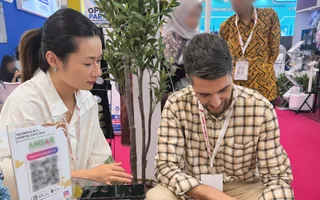
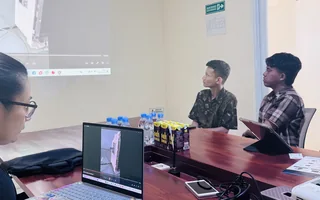
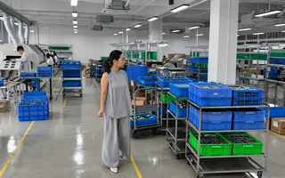
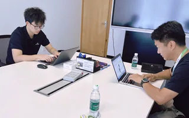
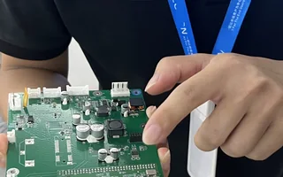
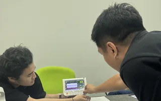
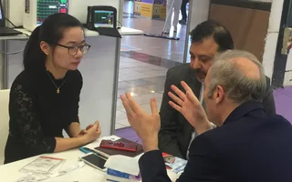
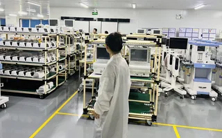
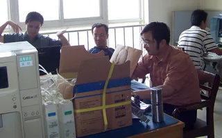
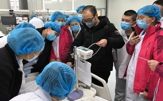

Custom Sourcing & Development
Clarify early requirements, identify viable production routes and translate ideas into factory-ready actions.
China-side support
Not every sourcing project fits a standard buying process. I support overseas teams when requirements are custom, volumes are modest, communication is ongoing or shipment details need independent attention.
Core services
Clarify early requirements, identify viable production routes and translate ideas into factory-ready actions.
Support prototypes, samples, market tests and specialized quantities with realistic supplier options.
Track open questions, samples, specifications, timelines and supplier commitments across longer projects.
Coordinate practical checks, photo or video evidence and issue follow-up before goods leave China.
How it works
The scope is tailored rather than packaged. We begin with the business goal, technical requirements, quantity, timing and known risks. From there, I define the next useful actions and keep the work visible.
Clarify what must work, what can change and what would make the project unsuccessful.
Look beyond listings to evidence, samples, documents, communication and realistic execution.
Track questions, revisions, timelines and responsibilities until the next milestone is secure.
Share useful evidence and concise observations so the overseas team can act with context.
A good fit
See how we clarify requirements, verify what we can on site and follow up through handover. We flag open questions and changes that still need your approval.










Start with context
A useful first email includes the product, quantity, current stage, timing and the main concern you need solved.